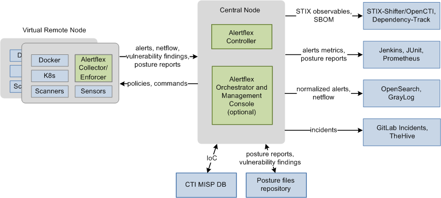
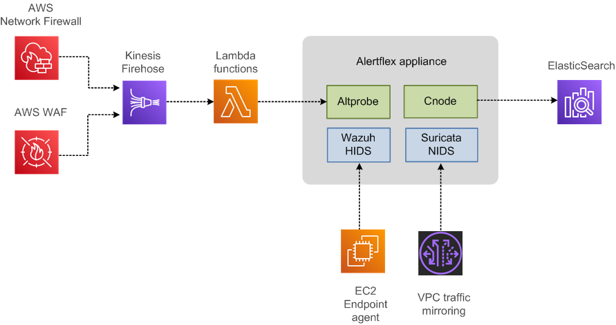

Architecture
The Alertflex solution works as a Security Event Manager and DevSecOps Orchestrator for a distributed grid of security sensors and scanners in a Hybrid IT infrastructure, which includes both on-premises and cloud-based systems. Solution supports the full DevSecOps cycle. It is capable of performing vulnerability/misconfiguration scanning tasks (DAST, SAST, SCA), but also excels in continuous monitoring by aggregating and forwarding cybersecurity events from sensors (HIDS, NIDS, WAF) to Log and Incident Management systems.
Alertflex can monitor different platforms such as Windows, Linux, Docker, K8s, and AWS, and offers a unified interface for over cybersecurity 20 tools. These integrated tools are primarily free open-source software, which Alertflex consolidates into one or multiple projects.
Example of Distributed Configuration of Alertflex for Cloud and On-Premises Infrastructure:
Example of Standalone Configuration of Alertflex for AWS Cloud:
